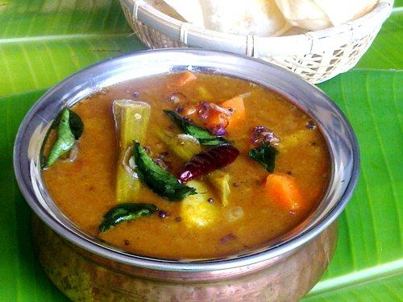
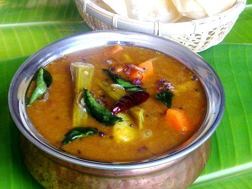

Parotta is layered flat bread that is made from Maida. It has its roots from the North Indian- Paratha. The Maida dough is stretched, rolled and finally flattened to make this delectable dish. Parotta is so famous that a Parotta stall can be seen after every other building. Parotta is mostly had with a type of Kurma which differs in every region. In some regions it is had with egg curry and in other, there is a special curry called the – Chalna to go with it. This curry is made using chicken or mutton. Parottas are had by Tamilians for every other occasion and once you try them, you’ll know why.

Kalaki is a type of South Indian omelet that is mostly served in Parotta stalls. This Omelet recipe is so similar to the regular one and yet so different that you will want for more. This omelet is made using whole egg and onions that are left to cook on the flame for about minute before they are taken out, so that they are only half done. This is a dish for all the egg lovers who like to eat eggs no matter the occasion. Have it after your Parotta for a fulfilling experience.

Considered as the signature dishes of Tamil Nadu, Idli and Sambar is a match made in heaven. Idlis are nothing but a type of rice batter that is steamed in unique moulds which gives them their shape. They are the best dieting food as they contain no fat (unbelievable right?). Idlis are popular breakfast of the Tamilians and they can be seen having them on the streets before they go to work or at night.
Sambar is lentil based stew that is made of a special mixture of spices and vegetable. Sambar is the most favorite broth of the Tamilians and they have it with absolutely everything (believe, I even have white bread with Sambar and it is delicious. You should definitely try it!). Idli and Sambar is the most famous food of the South Indian cuisine. This dish represents the South Indian Cuisine itself. The taste of Sambar is best on the streets.
 

One of the favorite street foods of the Tamilians are the Vadas. There are different types of Vadas. Some are sweet while some are salty and spicy. But the most well-liked and flavorsome of all the vadas is the Ulundu Vada. Ulundu is the Tamil name of a type of lentil-Urad. This Vada is characteristically extraordinary because it has a hole in the middle (no one knows why.). All the vadas are either had with Sambar or Coconut chutney or both. Vadas are the most popular snack which is eaten with tea or coffee.

Bhajji is a well-liked street food and can be seen hanging on the street-side stalls. It is made by dipping vegetables in a batter of gram flour and some spices. The most accepted in Tamil Nadu is the Mirchi Bhajji and the raw banana Bhajji. They are mostly sold during the monsoon season and are really crispy

Kuzhi Paniyaram or Paniyaram is a dish which is made by pouring batter into moulds. It can be either sweet or savory depending upon the ingredient used. If jaggery is used then it is saccharine and if spices are used it is savory. Paniyaram is an old recipe of southern India. It is a common sight in Tamil Nadu to see a Grandmother sitting on the roadside making this. And they sell them real cheap.

Salem Thattu Vadai Set is a popular street food found across Salem in Tamil Nadu. It is made of crunchy veggies sandwiched in thattai smeared with spicy chutneys. Make these for your evening snack.Salem Thattu Vadai Set is a spicy, tangy and tasty street food from south India; fresh and tangy beet, carrot and onion filling is sandwiched between crispy set of thattu vadai, smeared with spicy chutneys on the inside, for a crunchy and spicy bite.

Kambu also knowm as Pearl millet is a very nutritious grain .In Tamil Nadu Kambu Sadham,Kambu Koozh ,Kambu Adai and Kambu Kali were commonly eaten as breakfast . Decades ago,it was known as the poor mans food.One big chembu(bowl) of kambam Koozh was known to keep the farmers energetic without hunger for many hours.It also kept their body cool in-spite of their hard labor full day in the hot sun.Pearl millet is high in iron,calcium and vitamin B-complex.Due to the growing awareness of the nutritional benefits of bajra, these days people are trying to include it in their diet.Thus,bajra porridge now become a part of healthy diet.